Semaine 4 : cap sur Toronto
Côté HyphTech
Semaine dans la continuité du projet, sans grande avancée à signaler pour l'instant. Petit point notable : j'ai suivi ma formation santé-sécurité obligatoire pour avoir accès au laboratoire, une étape administrative nécessaire avant de pouvoir vraiment mettre les mains dans le sujet matériel. Le site web sous Shopify avance aussi tranquillement, en toile de fond.
Rien de spécial, sauf le logement
Rien de particulier à raconter côté quotidien cette semaine, si ce n'est une bonne nouvelle : on a trouvé notre logement pour la fin du stage. De quoi voir venir plus sereinement les mois d'août et septembre.
Le week-end : direction Toronto
Cette fois, cap sur Toronto, la capitale économique du Canada, environ 7 heures de route depuis Sherbrooke. En chemin, halte à Kingston, une ville qui vaut le coup d'œil : mignonne, posée au bord du lac Ontario.
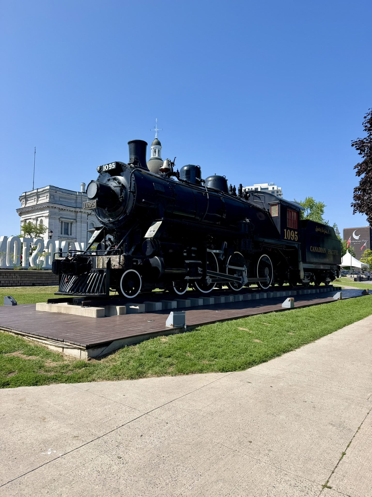
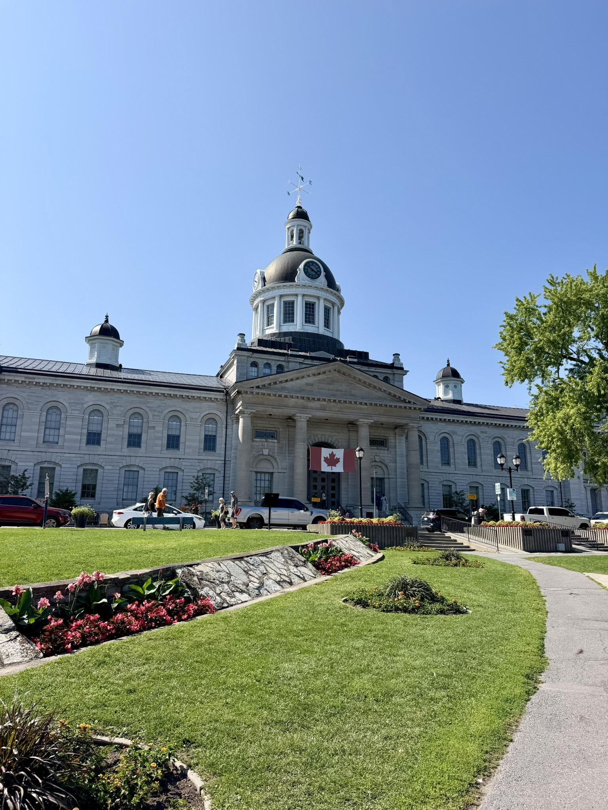
Le samedi, journée complète à Toronto. Une ville impressionnante : beaucoup de gratte-ciel, très grande, et vraiment animée : un contraste net avec Ottawa, visitée la semaine précédente.
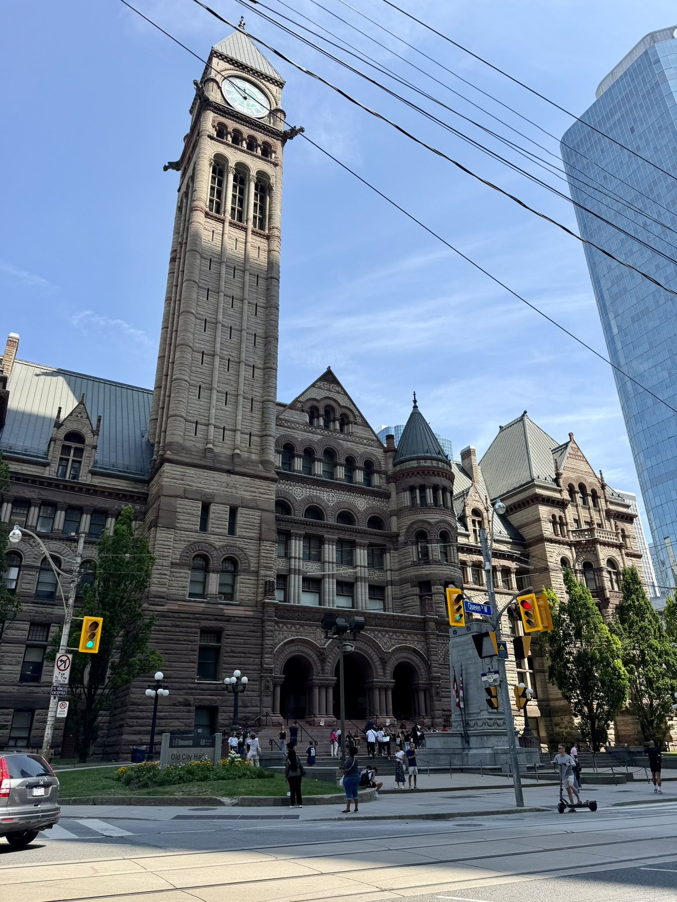
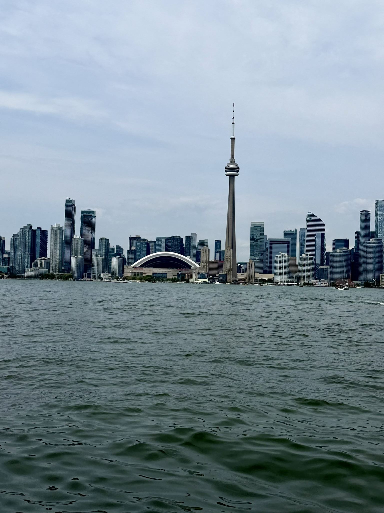
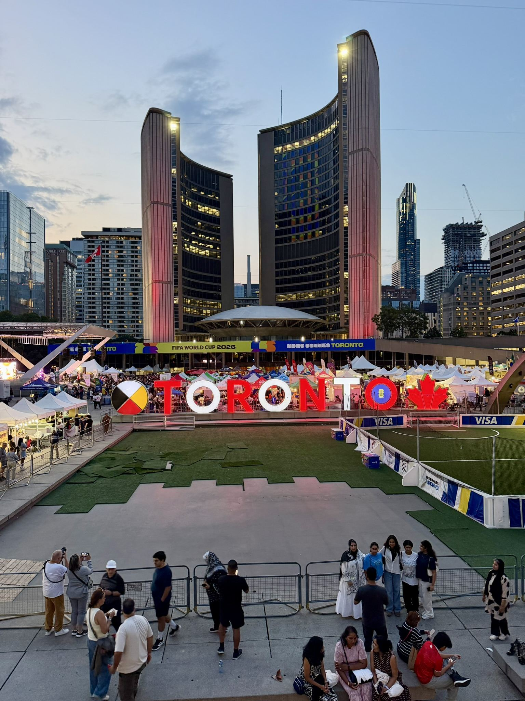
Le samedi soir, on a eu la chance de dîner au restaurant de la Tour CN, le 360, une table qui effectue une rotation complète à 360 degrés pour profiter de la vue sur toute la ville pendant le repas. Un cadre assez unique.
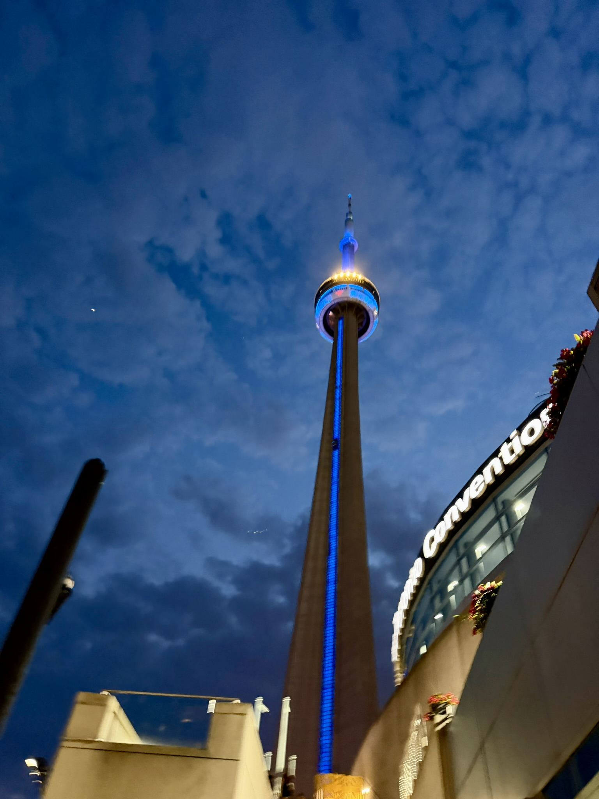
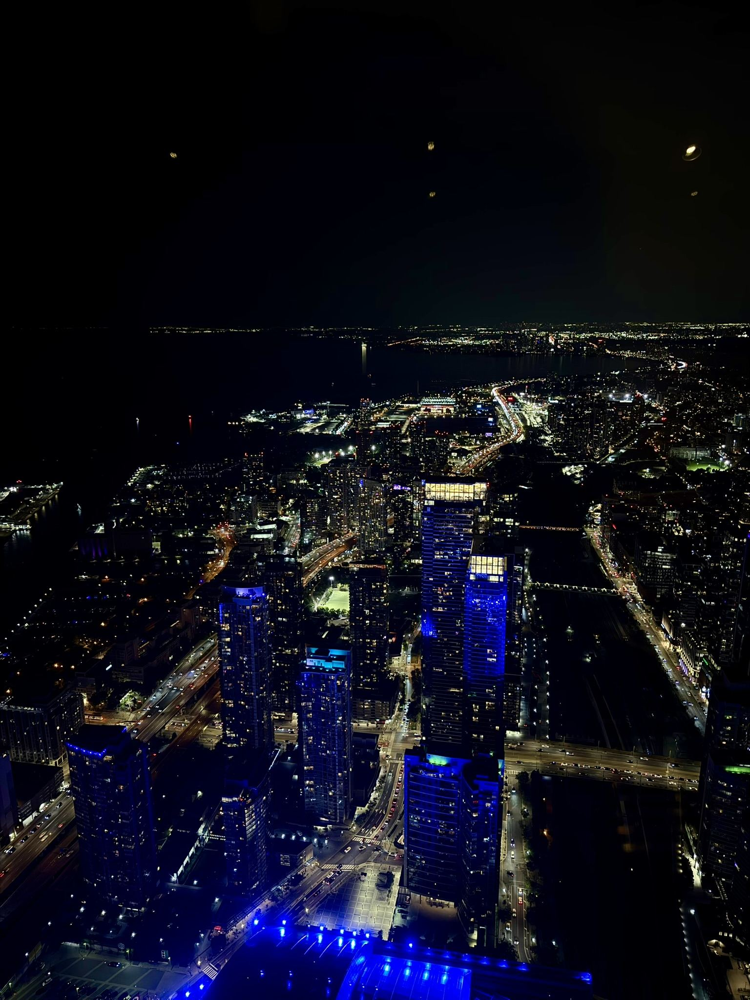
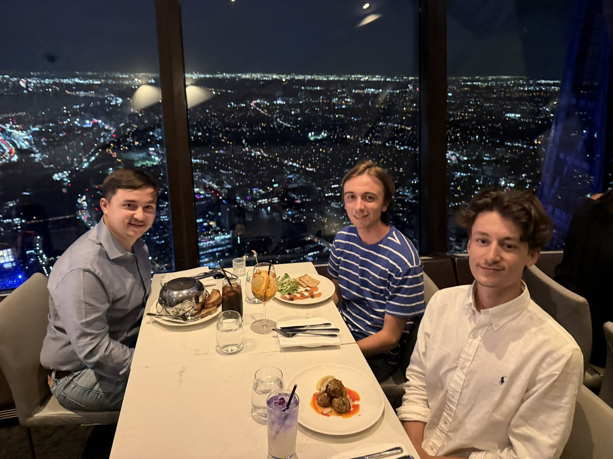
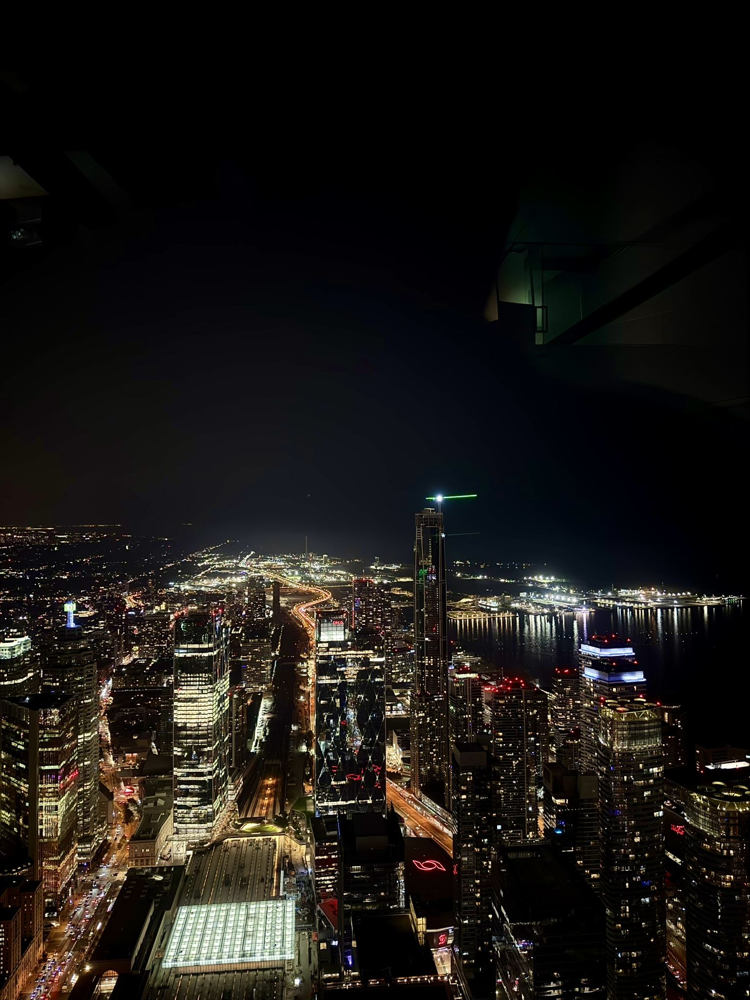
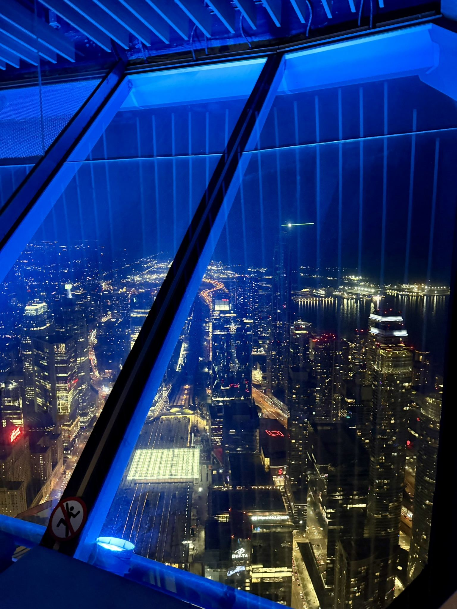
Dimanche : les chutes du Niagara
Pour conclure le week-end, direction les célèbres chutes du Niagara. Aussi impressionnant qu'on l'imagine, ça vaut vraiment le détour.
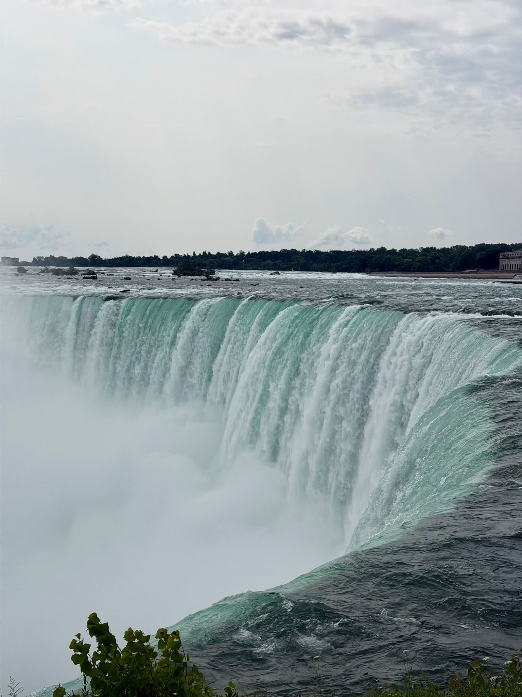
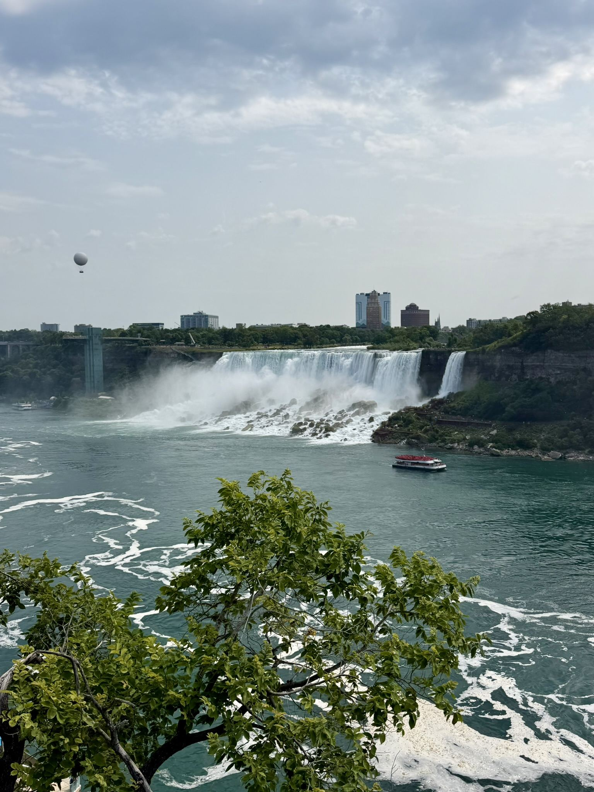
Puis retour à Sherbrooke : encore 8 heures de route pour boucler le week-end. La semaine 5 arrive vite, à suivre dans le prochain article.